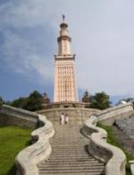
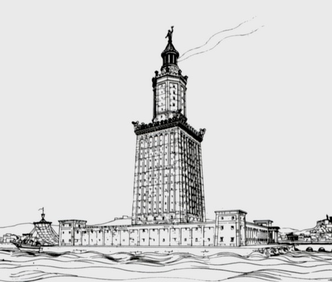
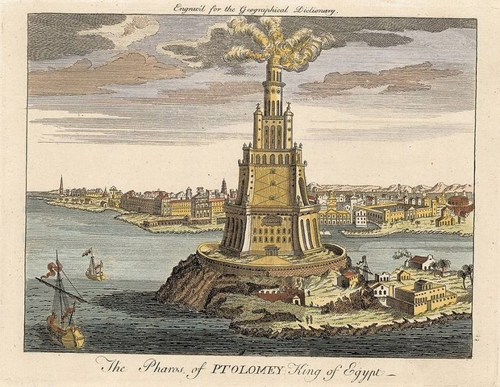
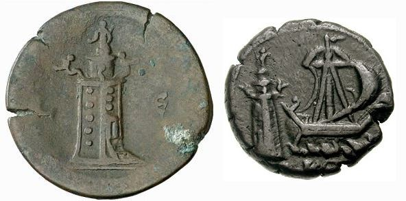

Після завоювання Єгипту Олександром Македонським було засновано місто, названий на його честь Олександрією. Місто почало активно розвиватися і процвітати, став великим центром морської торгівлі. Незабаром виникла і гостра необхідність в спорудженні Олександрійського маяка.
Олександрійський маяк. Інформація та цікаві факти
Місцем для маяка був обраний острів Фарос, що знаходиться в 1290 метрах від Олександрії. Зведенням Фароського маяка, який став пізніше сьомим чудом світу, керував архітектор Сострат, син Дексіфана з Книда.
Для забезпечення підвезення будівельних матеріалів до острову була споруджена дамба. Саме будівництво було виконано за мірками стародавнього світу блискавично, зайняло всього шість років (285-279 роки до н.е.). Нова споруда відразу ж «вибила» стіни Вавилона з списку класичних чудес світу , і зайняла там почесне місце і до наших днів. Висота Олександрійського маяка за оцінками сучасників сягала 120 метрів. Світло, що проектується з вежі Олександрійського маяка, було видно на відстані до 48 кілометрів.

У маяку виділялося три яруси.
Перший ярус мав квадратну форму зі сторонами 30,5 метрів, орієнтованими по сторонах світу. Загальна висота цього ярусу складала 60 метрів. Кути ярусу займали статуї тритонів. Саме приміщення призначалося для розміщення робітників і охорони, коморах під паливо і продукти.
Середній ярус Фароського маяка мав восьмикутну форму з гранями, орієнтованими по переважаючим тут вітрам. Верхню частину ярусу прикрашали статуї, частина яких функціонувала в якості флюгерів.
Верхній ярус циліндричної форми виконував саме роль ліхтаря. Він був обнесений вісьмома колонами, накритими куполом-конусом. Верх купола Фароського маяка прикрашала семиметрова статуя Ісіди-Фаріі (попечителька мореплавців). Потужний світильник проектувався за допомогою системи увігнутих металевих дзеркал. Про доставку палива на вершину Олександрійського маяка побутують давні суперечки. Одні припускають, що доставка здійснювалася за допомогою підйомних механізмів по внутрішньої шахті, інші ж кажуть, що підйом проводився за допомогою мулів по спіральному пандусу.

Також в маяку була і підземна частина, де розташовувалися запаси питної води для гарнізону. Варто згадати, що маяк виконував ще й роль фортеці, що охороняє морський шлях в Олександрію. Сам Фаросский маяк був навіть обнесений потужної огорожею з бастіонами і бійницями.
У XIV столітті диво світла Фаросский маяк був зруйнований землетрусом. В даний час про зовнішній вигляд сьомого дива світу свідчать тільки зображення на римських монетах і останки руїн. Так, наприклад, дослідження 1996 року дозволили відшукати на дні моря останки Олександрійського маяка.

Маяк на римських монетах
Через сотню років після руйнування на його місці султан Кайт-бей побудував форт. І в даний час з'являються ініціатори, які бажають реконструювати Фаросский маяк, на тому місці, де він спочатку знаходився - на острові Фарос. Але влада Єгипту поки не хочуть розглядати ці проекти, і фортеця Кайт-бей продовжує охороняти місце колишнього великого споруди давнини.

Фортеця Кайт-Бей